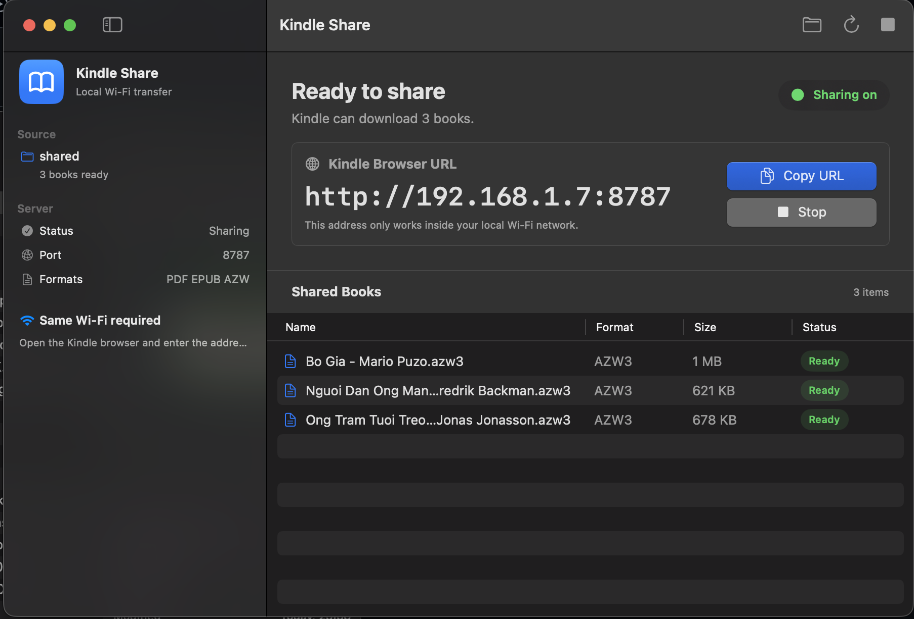

1
Choose a folder
Pick the folder on your Mac that contains PDF, EPUB, MOBI, AZW, or AZW3 files.
Share a folder from your Mac, open one local address on Kindle, and download your books. No cloud. No account. No cable.

Kindle Share is intentionally small. It does one thing: make local book transfer from Mac to Kindle feel obvious.
Pick the folder on your Mac that contains PDF, EPUB, MOBI, AZW, or AZW3 files.
The app starts a tiny local server and shows a Kindle-friendly address.
Use the Kindle browser to open the address and tap a book to download it.
There are already ways to move books around. Kindle Share is for the moment when you just want a lightweight local handoff.
No upload, no Amazon cloud dependency, no waiting for conversion. Your Mac serves files directly on your network.
No big library database or heavy management workflow. Choose a folder and share it.
No cable, no Finder copy step. Kindle pulls the file from your Mac over Wi-Fi.
The app only exposes the folder you choose. It is meant for your home Wi-Fi, not the public internet.
Kindle Share is early, open source, and built for people who like simple local tools.